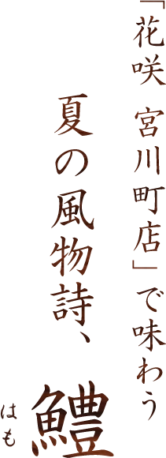
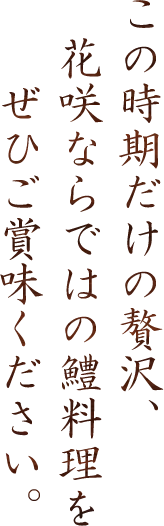
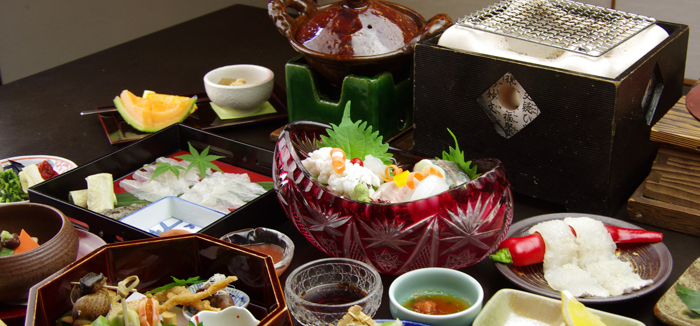
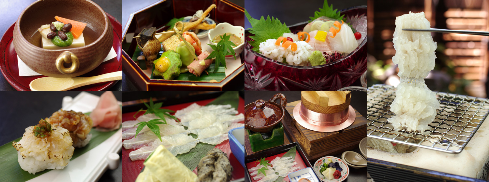
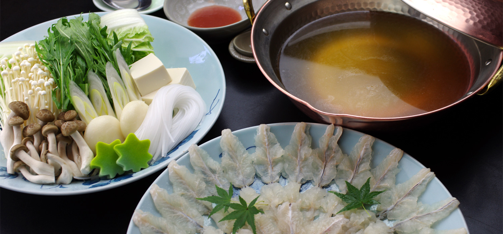
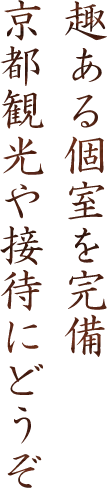
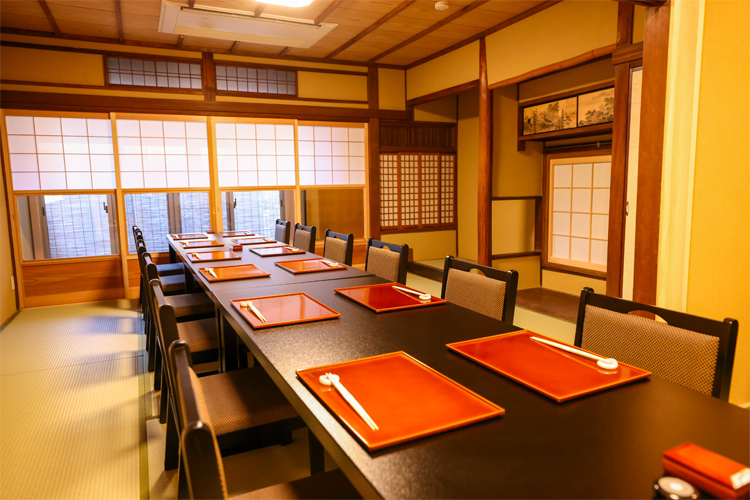
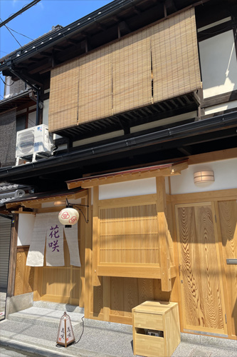
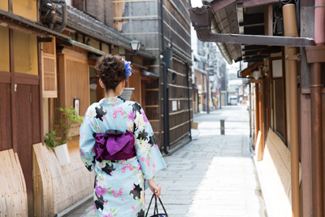

- 京都の夏の味覚、鱧を使った「はもしゃぶ」は単品とコースがございます
- 鱧のおとしが味わえる、旬の新鮮なお魚を盛り合わせたお造り
- 香ばしさと歯応えを愉しむ鱧の炭火焼きは料理人が目の前でお焼きいたします
- 鱧の天ぷらや握りなど、鱧を思う存分愉しめる鱧づくし「鱧会席」も大変人気です
- 接待や慶事・お祝いなどに使える個室をご用意しております

京都の夏の風物詩、鱧料理。
その昔、生命力の強い鱧は京都まで生きたまま運べる魚ということで、大変重宝されました。
しかし、鱧という魚は大変小骨が多く、そのままでは食べられません。
そこで京都の料理人たちは独特の『骨切り』という調理法を生み出したのです。
花咲では毎年おおよそ4月〜10月の間、鱧の旨味を存分に味わえるお鍋がメインの「鱧しゃぶ」と、鱧を様々な京会席料理でご堪能いただける「鱧会席」をご用意しております。
どちらも、毎年この季節を楽しみに、遠方よりお越しくださる方もいらっしゃる人気の会席です。
こちらはお昼も夜もご用意できますので、京都観光はもちろん、記念日やお祝い、ご接待などの大切な席にもおすすめです（全て要予約）。
京都の歴史と料理人の技を堪能できる花咲の鱧料理を、存分にお楽しみください。

鱧を様々な料理で存分にご堪能いただける鱧づくしの京会席。あっさりした鱧は料理によって食感や味わいが千差万別、京の料理人の職人技で最後まで飽きることなく美味しくお召し上がりいただけます。
お昼は6,600円以上、夜は11,000円以上のメニューで個室をご利用いただけます。ゆったりと鱧をご堪能ください。
※個室が満席の際にはご容赦くださいませ
※飲み放題も＋2,500円でご利用いただけます


透き通った香り高い鰹だしで鱧の骨を焼いてじっくり煮出した、鱧の旨味がたっぷりつまった出汁で、新鮮な鱧を味わう鱧しゃぶ。心地よい食感と想像を遥かに超える鱧の豊かな美味しさに、驚かれる方も少なくありません。クーラーの効いた涼しいお部屋で、鱧ならではの鍋をご賞味ください。
お昼は6,600円以上、夜は11,000円以上のメニューで個室をご利用いただけます。ゆったりと鱧をご堪能ください。
※個室が満席の際にはご容赦くださいませ
※飲み放題も＋2,500円でご利用いただけます

お昼は6,600円以上、夜は11,000円以上のメニューで個室をご利用いただけます。京都観光はもちろん、記念日やお祝い、ご接待などの大切な席にもおすすめです（全て要予約）。
スタッフがご利用シーンに合わせておもてなし致します。


